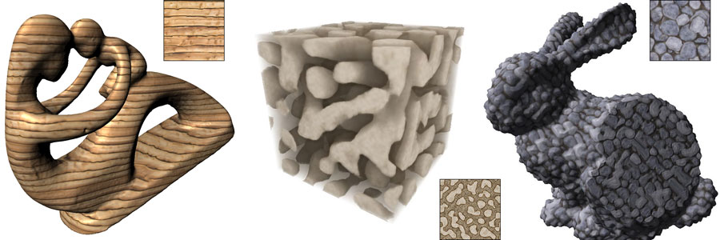
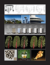
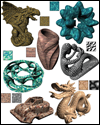
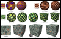
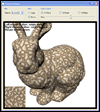

| SIGGRAPH2007 |
|
Solid Texture Synthesis from 2D Exemplars |
|
Johannes Kopf Daniel Cohen-Or Oliver Deussen Dani Lischinski |
|
ACM Transactions on Graphics (SIGGRAPH 2007 issue), Vol. 26, No. 3, July 2007, pp. 2:1-2:9. |
|  |
|
Abstract We present a novel method for synthesizing solid textures from 2D texture exemplars. First, we extend optimization-based 2D texture synthesis to synthesize 3D texture solids. Next, the non-parametric texture optimization approach is integrated with histogram matching, which forces the global statistics of the synthesized solid to match those of the exemplar. This improves the convergence of the synthesis process and enables using smaller neighborhoods. In addition to producing compelling texture mapped surfaces, our method also effectively models the material in the interior of solid objects. We also demonstrate that our method is well-suited for synthesizing textures with a large number of channels per texel. |
Paper (PDF, 22M) |
|||
|
|
Video
(MP4, 35M) |
|||
|  | Cover | |||
|
BibTex:
@article{kopf-2007-solid,
|
The followings link to Johannes website: |
|||
|  |
Results More Results |
|||
|  | Comparisons
to: Wei Jagnow et al. |
|||
|
|
Texture Library | |||
|  | Volume Viewer | |||
| Maya Plugin | ||||